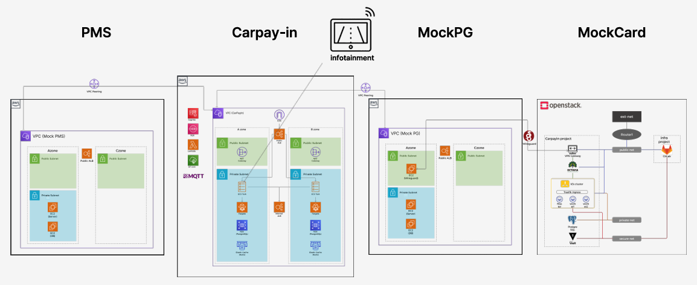

OpenStack 기반 Private Cloud 인프라 CarPayIn
차량 QR 인증만으로 입차부터 결제까지 처리하는 주차 결제 시스템의 프라이빗 클라우드를 단일 물리 서버 위에 구축했습니다.
- 물리 NIC이 하나뿐인 환경에서 dummy 인터페이스와 OVS로 External Network를 확보
- Terraform은 프로비저닝, Ansible은 설정과 스케일링으로 나누고 apply는 수동 승인 게이트로 보호
- AlertManager 알림을 FastAPI 어댑터가 받아 GitLab CI로 VM을 늘리고 줄이는 노드 오토스케일링 구현